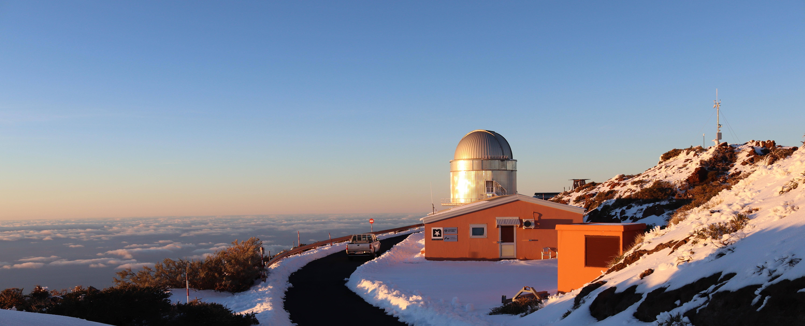

About
I am a postdoc at the Department of Space, Earth, and Environment at Chalmers University of Technology, working on the characterization of exoplanets and tracing their dynamical history. I did my PhD at the Stellar Astrophysics Centre at the Department of Physics and Astronomy, Aarhus University, where I've also worked as a research assistant. I have previously been working as a support astronomer at the Nordic Optical Telescope on La Palma, Spain, photographed below on an icy sunset during winter.
